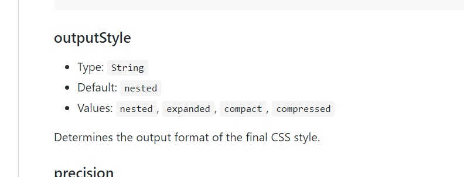

Css 코드를 여러 줄이 아닌 한 줄로도 출력할 수 있나요?
- Css 코드를 여러 줄이 아닌 한 줄로도 출력할 수 있나요?
-
국내 실무 환경에서는 CSS 코드를 여러 줄이 아닌 한 줄로 사용할 때가 많습니다.
필자는 읽기 힘든 한 줄보다는 읽기 쉬운 여러 줄을 선호하지만, 한 줄을 선호하는 사용자도 분명 있습니다.
https://github.com/sass/node-sass#outputstyle에 쓰여있는 걸 보면
expand, compact 기능을 지원하는 걸 볼 수 있습니다. (5년 전엔 안됐습니다.)

위처럼 소스를 작성하면 알아서 압축해주고, 알아서 해당 소스들이 어떤 파일에서 왔는지를 보여줍니다. (sourcemaps 기능 - gulp 4.0 부턴 내장되어있는 모듈임)
compact 방식은 위의 스크린샷처럼 '촘촘하게' CSS 코드를 한 줄로 출력합니다.
국내 실무 환경에서 가장 많이 사용하는 방식입니다.
왜냐면 코드를 여러줄로 내보내는 것보다 성능 면에서 훨씬 낫기 때문입니다.
비록 코드를 compressed 하고, 안하고의 차이는 기껏해야 수십~수백 키로바이트겠지만, 해당 서버에 접속하는 사람의 수가 수천명 아니 수만을 넘어 수천만명이라고 생각한다면
이 리소스는 결코 적은 리소스가 아닐 것입니다.
때문에 압축해서 내보내는 것이 좋습니다.
- compressed
- 코드를 한줄로 압축하여 출력
- compact
- 코드를 선택자마다 한줄로 출력
- nested
- 코드를 선택자마다 여러 줄로 출력하되, 선언 구문의 끝이 마지막 속성 뒤에 위치(기본값)
- expanded
- 코드를 선택자마다 여러줄로 출력